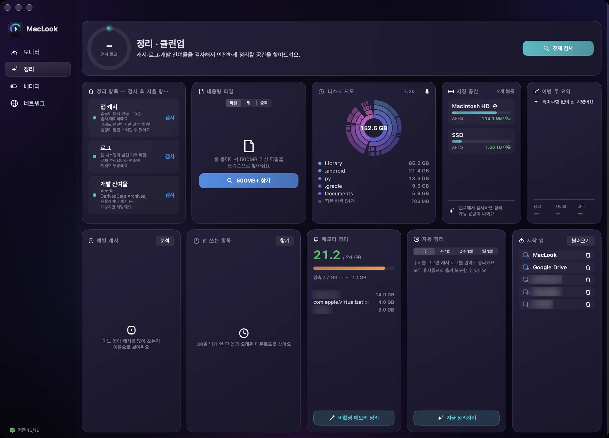
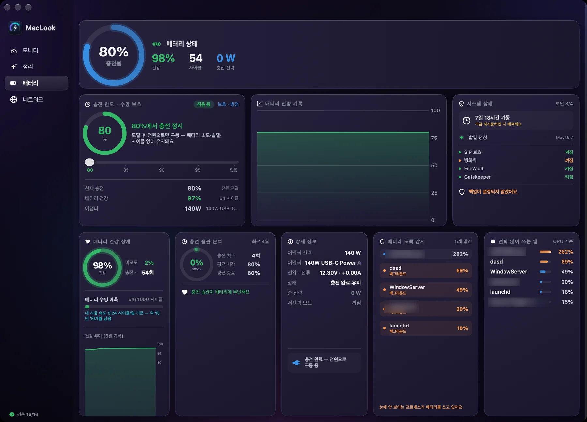
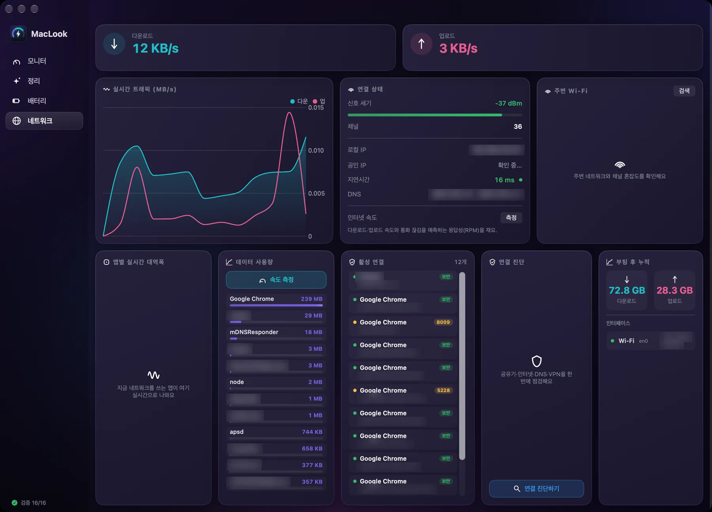

탭 하나가 앱 하나예요
모니터·정리·배터리·네트워크. 앱 다섯 개 깔아서 메뉴바 꽉 채울 필요 없어요.



겉핥기 위젯이 아니에요
하드웨어에서 직접 읽고, 시스템 도구랑 맞춰본 숫자만 보여줘요.
전체 센서 패널
다이 온도 센서 52개와 SMC 온도 키 273개(M4 Pro 기준)를 전부 이름 붙여서 보여줘요. P코어·E코어·GPU·SSD·배터리로 묶어서요.
어젯밤 팬이 뭘 했는지
1·5·15분은 메모리, 1시간·24시간·7일은 디스크에. 재시작해도 그래프가 이어져요.
치운 건 되돌릴 수 있어야죠
지우는 건 전부 휴지통으로 가요. 방금 치운 건 버튼 하나로 제자리에. iCloud 자리표시자랑 APFS 클론도 구분해서 "확보" 숫자가 실제랑 같아요.
앱 지울 때 찌꺼기까지 보여줘요
번들 ID·헬퍼·앱 그룹·앱 이름 폴더·자동 실행 항목까지 찾아서 목록으로 보여주고, 체크한 것만 지워요. 여러 앱이 같이 쓰는 폴더는 절대 안 건드려요.
배터리를 오래 쓰는 세 가지
충전 한도(80~100%), 뜨거워지면 충전을 멈추는 발열 보호, 목표 %까지 배터리로 쓰는 방전 모드. 최신 macOS에서도 애플이 열어둔 방식으로 돼요.
누가 내 데이터를 쓰는지
앱별 실시간 대역폭과 부팅 후 누적, 지금 연결된 곳(앱 → 호스트), 애플 networkQuality로 다운·업·응답성 측정까지.
팬 제어, 안전장치 포함
자동 · 온도 커브 · 수동 %. 루트 헬퍼는 팬 키만 만지고, 앱이 멈추면 30초 뒤 알아서 자동으로 돌아가요.
한국어부터
한국어 · English · 日本語 · 简体中文 · Deutsch · Français · Español
숫자를 믿을 수 있게
보여주는 값은 시스템 도구랑 맞춰봐요. 안 맞는 값은 아예 안 보여줘요.
다섯 개 앱을 하나로
확인된 범위에서만 표시합니다. 각 앱의 최신 버전 기준이며, "?"는 확인하지 못한 항목입니다.
| 기능 | MacLook | 모니터링 전용 앱 | 정리 전용 앱 | 배터리 전용 앱 | 앱 삭제 전용 앱 |
|---|---|---|---|---|---|
| 메뉴바 실시간 모니터 | ✓ | ✓ | △ | — | — |
| 24시간 · 7일 이력 | ✓ | ✓ | — | — | — |
| 전체 센서 목록 | ✓ | ✓ | — | — | — |
| 캐시·로그 정리 + 되돌리기 | ✓ | — | 정리만 | — | — |
| 앱 제거 (잔여물 목록) | ✓ | — | ✓ | — | ✓ |
| 클라우드 자리표시자 · 클론 인식 | ✓ | — | ? | — | — |
| 충전 한도 · 발열 보호 · 방전 | ✓ | — | — | ✓ | — |
| 앱별 네트워크 · 연결 목록 | ✓ | ✓ | — | — | — |
| 팬 제어 | ✓ | ✓ | — | — | — |
| 내장 수치 검증 | ✓ 40 | — | — | — | — |
| 가격 | ₩39,900 1회 | 유료 | 구독 | 무료 / Pro | 무료 |
각 분야에서 많이 쓰는 유료·무료 앱 최신 버전 기준이에요.
한 번 사면 끝
모니터 탭은 영원히 무료. 나머지는 14일 써보고 마음에 들면 한 번만 결제하세요. 구독은 없어요.
매일 켜두는 모니터링은 계속 무료예요.
- 모니터 탭 전체: 전력·온도·팬·메모리·디스크·SSD
- 메뉴바 아이콘 15종과 24시간·7일 이력
- 전체 센서 패널, 알림, 7개 언어
따로 사면 모니터링·정리·배터리 앱 값을 합쳐 약 9만 원. 여기서는 한 번에 ₩39,900.
- 정리 · 앱 제거 · 되돌리기 · 중복 파일 · 디스크 지도
- 충전 한도 · 발열 보호 · 방전 모드
- 앱별 대역폭 · 활성 연결 · 속도 측정 · 연결 진단
- 팬 제어 (자동 · 커브 · 수동)
- 맥 3대까지 같은 키
- 30일 환불 · 같은 메이저 버전 무료 업데이트
결제는 Lemon Squeezy가 처리하고 세금·영수증까지 알아서. 키는 구매 즉시 이메일로 와요.
지금 바로 설치
DMG 열고 드래그
MacLook을 응용 프로그램 폴더로 끌어다 놓으면 끝. 경고창 없이 바로 열려요.
권한은 한 번에
설정 > 권한에서 알림·자동화·폴더·위치를 한 번에 물어보고, 전체 디스크 접근은 설정 화면까지 열어드려요.
팬·충전은 원할 때만
"시스템 헬퍼 활성화" 누르고 관리자 암호 한 번이면 돼요. 모니터링이랑 정리는 헬퍼 없이도 다 돼요.
자주 묻는 질문
왜 App Store가 아니라 홈페이지에서 받나요?
App Store 규칙상 팬·충전 제어, 시스템 도구 실행, 휴지통 접근이 막혀요. 그래서 Apple 보안 인증을 받은 앱을 홈페이지에서 직접 배포해요. 인증은 Apple이 직접 검사하고, 업데이트는 앱 안에서 받으면 돼요.
전체 디스크 접근은 왜 필요한가요?
없어도 돼요. 켜면 ~/Library 안의 시뮬레이터·iOS 백업 같은 큰 것들까지 검사해요. 메일·메시지·사진 데이터는 켜져 있어도 안 건드려요.
루트 헬퍼는 안전한가요?
헬퍼는 팬이랑 충전 관련 SMC 키만 만지고, 목표 RPM은 하드웨어 범위 안에서만 움직여요. 앱에서 30초 동안 명령이 없으면 자동 모드로 돌아가고, 앱을 지우면 스스로 지워져요. 접속한 앱 서명(팀 ID)을 확인해서 다른 프로그램은 명령을 못 보내요.
어떤 맥에서 되나요?
Apple Silicon(M1~M5), macOS 15 이상. 팬이 없는 MacBook Air는 팬 카드만 빠지고 나머지는 똑같아요. M4 Pro에서 직접 재봤고, 다른 세대는 공개된 센서 표 기준으로 맞춰뒀어요.
가격은요? 데이터는요?
모니터 탭과 메뉴바는 계속 무료예요. 정리·배터리·네트워크·팬 제어는 14일 체험 뒤 Pro(₩39,900, 1회)가 필요해요. 밖으로 보내는 데이터는 없고, 인터넷은 업데이트 확인·라이선스 확인·직접 누른 속도 측정에만 써요. 계정도 없고, 사용 기록 수집도 없어요.